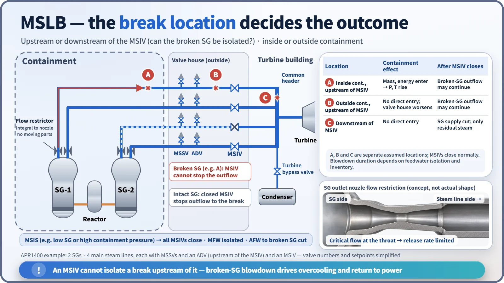
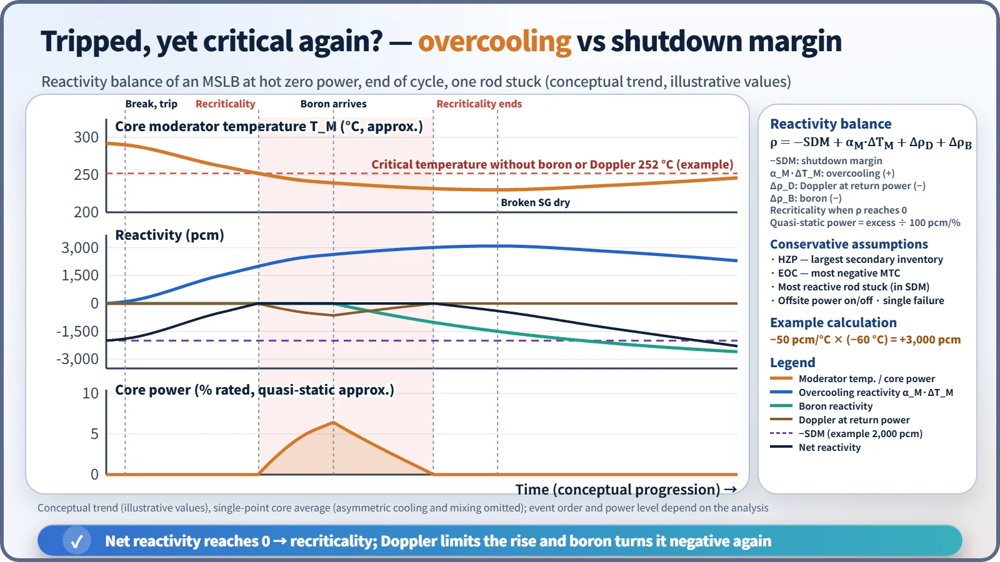
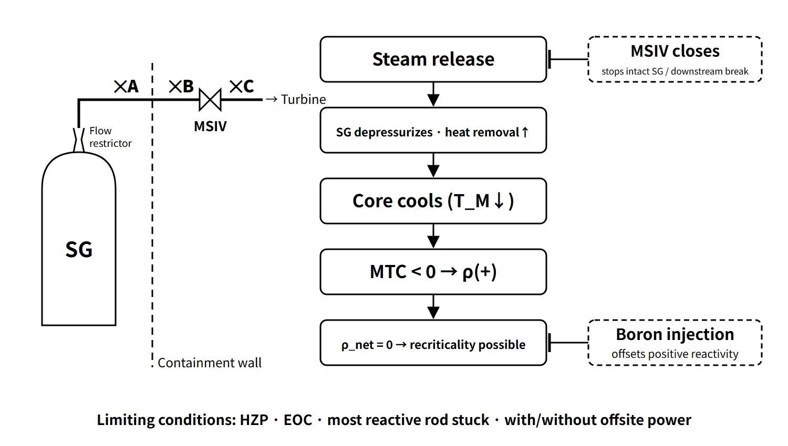

Accidents, Safety Analysis & Severe Accidents · C-SA-007
Main Steam Line Break (MSLB) — Return to Power from Overcooling, and Behavior by Break Location
Too much heat removal: overcooling, negative MTC, return to power after the trip, and why the break location matters.
A main steam line break (MSLB) is a design basis accident in which a main steam line on the secondary side of a PWR breaks and releases a large amount of steam; the primary side is overcooled as a result, and positive reactivity is inserted through the negative moderator temperature coefficient (MTC). Its starting point differs from LOCA and SGTR: it is not an accident that loses coolant but one in which heat removal increases excessively.
Principle and mechanism
Accident progression (full power, large break)
- Surge in release: right after the break, both SGs discharge steam through the common header. When the pressure ratio is high enough, critical flow forms at the throat of the flow restrictor in the SG outlet nozzle and limits the release rate.
- Overcooling: SG pressure and saturation temperature fall, primary-to-secondary heat transfer increases and the cold-leg temperature drops. The coolant contracts, so pressurizer level and pressure decrease.
- Pre-trip power rise: when the cold coolant reaches the core (a few seconds later), the negative MTC inserts reactivity and power rises. In an APR1400 comparative analysis, the reactor tripped on variable overpower at about 10 seconds.
- Isolation: low SG pressure or high containment pressure generates the main steam isolation signal (MSIS); all MSIVs close and main feedwater is isolated (about 20 seconds in the same analysis).
- Safety injection: low pressurizer pressure generates the SIAS and borated water is injected. Unborated water in the piping enters first, so boron arrives with a delay.
- Termination: once the broken SG, with its feedwater isolated, empties (dry-out), the overcooling ends and the RCS heats up and repressurizes. Decay heat is then removed through the ADVs and turbine bypass of the intact SG.
The break location decides the outcome

| Location | Containment effect | After the MSIVs close |
|---|---|---|
| A Inside containment, upstream of the MSIV | Mass and energy enter → pressure and temperature rise (spray actuation conditions may be reached) | Broken-SG outflow can continue |
| B Outside containment, upstream of the MSIV | No direct entry; valve house environment worsens | Broken-SG outflow can continue |
| C Downstream of the MSIV | No direct entry | SG supply cut off; only residual downstream steam is released |
A, B and C are separate assumptions. For an upstream break, how long the broken SG keeps discharging depends on feedwater isolation and the remaining inventory.
The common behavior is as follows. Reactor power rises before the trip and then shuts down (return to power possible); pressurizer level and pressure fall by contraction and recover with SI; broken-SG pressure and level drop sharply (the level can rise momentarily from initial swell). Intact-SG pressure recovers after the MSIVs close, and its level recovers with auxiliary feedwater. A break inside containment often governs the peak containment atmosphere temperature because of superheated steam, while the peak pressure is set by LOCA or MSLB depending on the design.
Return to power: why hot zero power and end of cycle
The reactivity balance after the trip is:
ρ = −SDM + α_M·ΔT_M + Δρ_D + Δρ_B
When the overcooling reactivity α_M·ΔT_M (positive, since ΔT_M < 0 and α_M < 0) grows until the net reactivity, including the Doppler and boron terms, reaches zero, the reactor becomes critical again (return to power). Here SDM already accounts for the most reactive rod stuck, and ΔT_M is the change in effective core moderator temperature. For example, α_M = −50 pcm/°C with 60 °C of cooling gives +3,000 pcm (teaching example). The analysis assumes the conditions that make this effect largest.
- End of cycle (EOC): with almost no boron, the MTC is most negative.
- Hot zero power (HZP): the SG inventory is largest, so the cooling energy is large, and there is less stored heat and decay heat to offset it than after a trip from power operation.
- Most reactive rod stuck fully withdrawn: reduces the SDM and concentrates power around the stuck rod.
- With and without offsite power, single failure: with offsite power the RCPs keep running and cooling is greater; without it SI is delayed. Both are calculated and the more adverse case is used.
Whether return to power actually occurs is decided by the analysis for each design, SDM and point in the cycle; some CE-type analyses (e.g. the Waterford 3 SER) found that the SDM exceeds the cooling reactivity, so there is no recriticality after the trip. Either way, the limiting condition is EOC at hot zero power. The return power is far below rated, and negative Doppler feedback limits the rise, but local peaks form in the sector on the broken-loop side and around the stuck rod. The key issue is the reduced DNB margin at low pressure and flow; the event ends once boron arrives and the net reactivity becomes negative.

What it means in a plant
Safety design features
- MSIS and fast MSIV closure: stop the discharge from the intact SG. The MSSVs and ADVs are upstream of the MSIVs, so they still protect the SG from overpressure after isolation.
- Flow restrictor: limits the release rate by the critical flow that forms at the throat when the pressure ratio is high enough, reducing the cooldown rate, reactivity insertion rate, containment pressurization rate and pipe reaction forces.
- Feedwater isolation and cutting auxiliary feedwater to the broken SG: continuing to feed water prolongs the overcooling. The CE-type auxiliary feedwater actuation signal identifies the broken SG by the pressure difference between SGs.
- SIAS and boron injection: APR1400 uses direct vessel injection with the IRWST as the water source.
- SDM and MTC management: the Technical Specification SDM and the COLR lower limit on MTC protect the assumptions of the MSLB analysis.
- Structures and environment: pipe whip restraints, containment design pressure and sprays, equipment environmental qualification.
Operator response
Standard EOPs diagnose an overcooling event (ESDE), identify and isolate the broken SG, and throttle and terminate SI while respecting the subcooling margin and cooldown-rate limits. If SI continues and the RCS is repressurized while still cold, PTS conditions arise, so the pressure–temperature limits must be observed.
The APR1400 example and DEC
APR1400 has 2 SGs and 4 main steam lines (2 per SG), each line with an MSIV, MSSVs and an ADV. Its design extension condition (DEC-A) analyses also include an MSLB that induces an SGTR; in that case the secondary-side release becomes a containment bypass path.
Regulatory and design criteria
The criteria below are examples from the United States (US NRC) and from ANSI/ANS standards.
| Basis | Key point |
|---|---|
| NUREG-0800 SRP 15.1.5 Rev.3 (2007) | Steam system piping failures inside and outside containment; evaluation of return to power, fuel damage and RCPB pressure |
| SRP 15.1.1–15.1.4 | Small secondary-side overcooling events such as SG relief or inadvertent safety valve opening are AOOs |
| SRP 15.1.5.A / RG 1.183 | Radiological consequences of breaks outside containment; pre-accident and accident-initiated iodine spikes |
| 10 CFR 50 App. A GDC 27, 28, 31, 35 | Reactivity control, limits on reactivity accidents, prevention of RCPB fracture, ECCS |
| ANSI/ANS-51.1 | A large MSLB is Condition IV (limiting fault) |
Because it is a postulated accident, the fuel acceptance criteria allow some fuel damage, but the number of failed rods is carried into the dose assessment. The judgment is made on DNBR and peak linear heat rate. Over time, the dose criterion has changed from TID-14844 to the AST (TEDE), and multiple failures such as MSLB + SGTR are now analyzed as design extension conditions. The design basis framework of return to power, SDM and MSIVs is unchanged.
Easily confused pairs
| MSLB | LOCA | SGTR | |
|---|---|---|---|
| Boundary damaged | Secondary (main steam line) | Primary pressure boundary | Primary–secondary (tubes) |
| RCS temperature | Drops sharply (overcooling) | Decreases | Decreases slightly |
| Affected SG | Pressure and level drop sharply | — | Level rises |
| Containment | Pressure and temperature rise if the break is inside | Pressure, temperature and radiation rise | No change |
| Radiation | Almost no change | Rises in containment | Rises on the secondary side |
| Main hazard | Return to power and DNB, PTS | Core cooling | Bypass release |
The common symptoms are falling pressurizer pressure and level and an SIAS. An inadvertently opened SG safety valve, an AOO of the same overcooling family, can be viewed as a small-scale MSLB.
Key points at a glance
- Definition: secondary main steam line break → large steam release → primary overcooling; a design basis accident (SRP 15.1.5).
- Key hazard: positive reactivity inserted by the negative MTC → pre-trip power rise and return to power after the trip.
- Limiting conditions: HZP, EOC, most reactive rod stuck, with/without offsite power, single failure.
- Progression: release↑ → T_c↓ → pressurizer level and pressure↓ → trip → MSIS, MSIVs close → SIAS and boron → reheating after broken-SG dry-out.
- By location: inside containment, containment pressure and temperature rise; upstream of the MSIV, release continues until the broken SG dries out; downstream, the MSIVs end it.
- Design measures: flow restrictor (critical flow), MSIVs, feedwater and auxiliary feedwater isolation, boron injection, SDM and MTC management.
- Acceptance: DNBR and peak linear heat rate, RCPB pressure, containment pressure and temperature, dose.
- Links: PTS on repressurization after overcooling; MSLB-induced SGTR in DEC.
